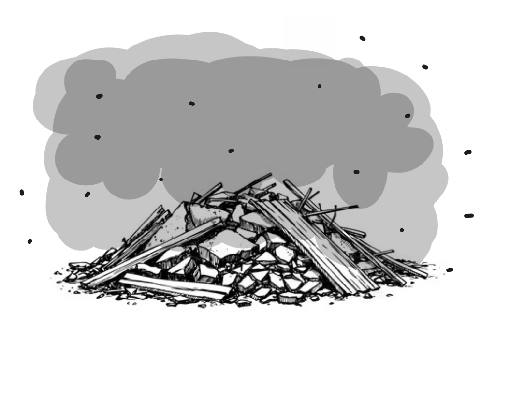

You quickly detangle yourself from your nightly cocoon and make your way to the door.
While twisting the knob and slowly pushing the door ajar, you get a lungful of ceiling dust. Your lungs start to feel strained and you are unable to stop yourself from coughing.
Your eyes start to adjust to the scene beyond your door frame and you see a pile of what was once your ceiling on the floor.
After a few seconds of shock, you notice the pile is… moving? You think that someone may be trapped below.
